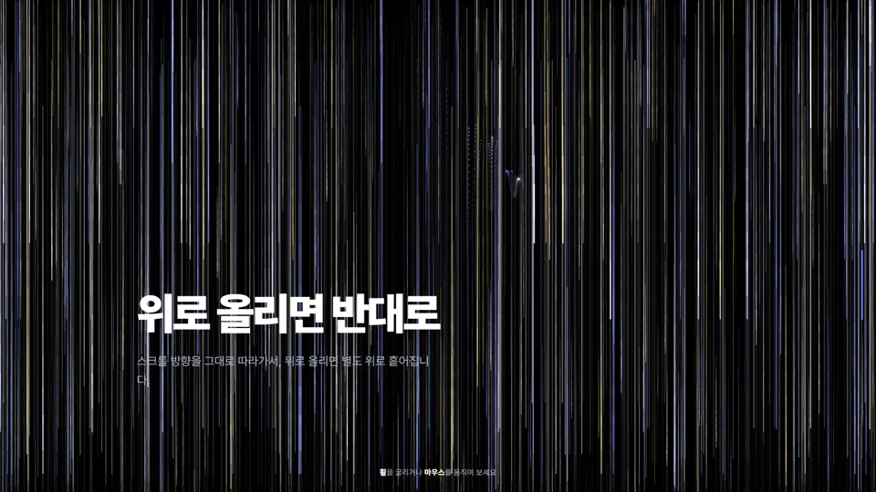
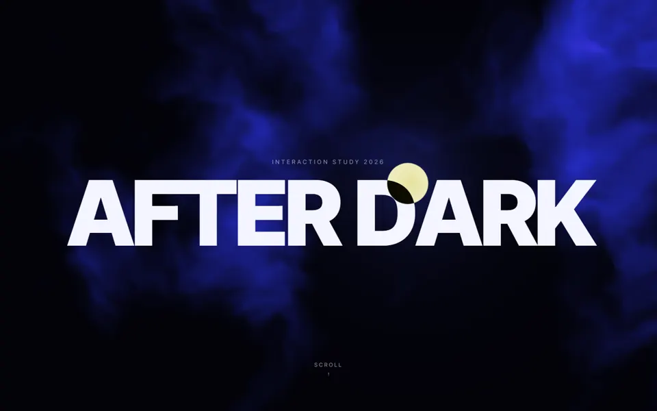
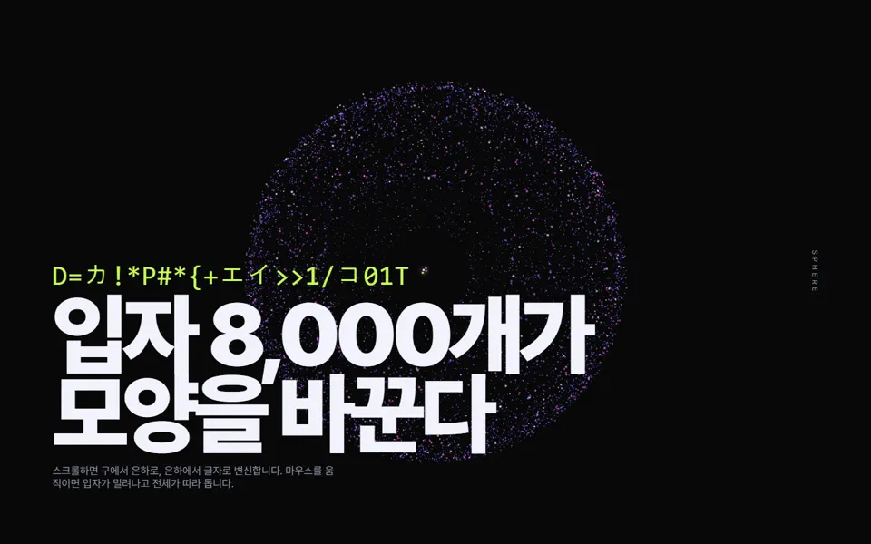
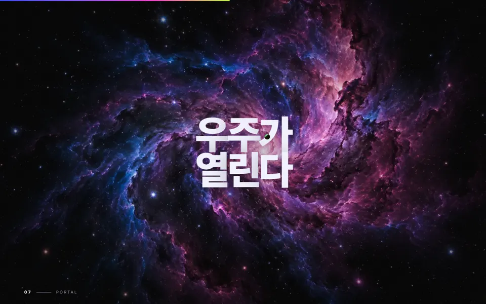
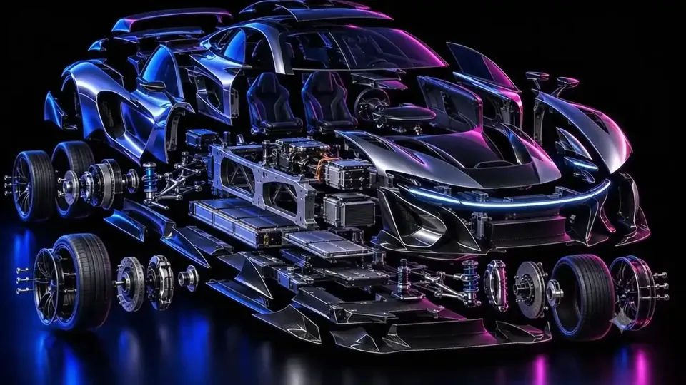
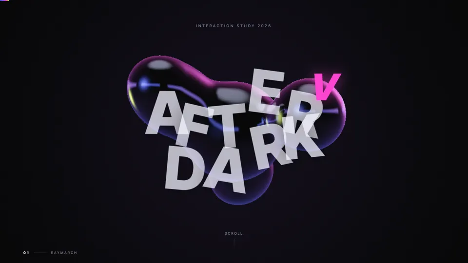
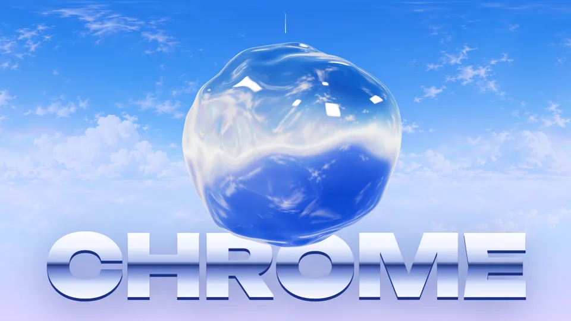
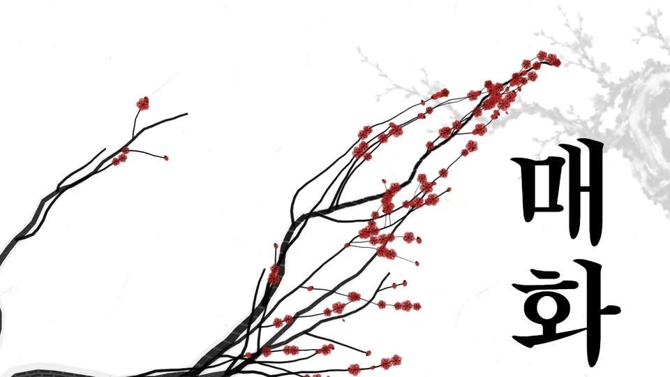
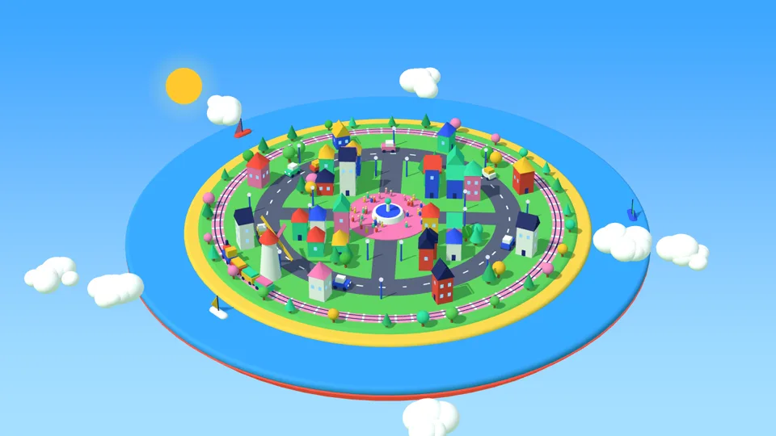

2026-09-28 · Canvas 2D · 휠 속도 워프 · 마우스 가루

2026-09-28 · GSAP ScrollTrigger · Lenis · WebGL

2026-09-28 · Three.js · 파티클 모프 · SVG 필터

2026-09-28 · 영상 3개 · 픽셀소트 셰이더 · 입자 1만 개

2026-09-28 · WebGL2 유체 커서 · 영상 텍스트 마스크 · 192프레임 이미지 시퀀스

2026-09-28 · 레이마칭 SDF 메타볼 · Three.js 후처리 · 노이즈 변위 전환

2026-09-28 · 액체 금속 셰이더 · 무지개 비눗방울 · 홀로그램 카드

2026-09-28 · WebGL 먹 번짐 · 붓글씨 획순 · 먹물 영상 마스크

2026-09-28 · 절차 생성 3D 섬 · 낮밤 전환 · 틸트시프트
